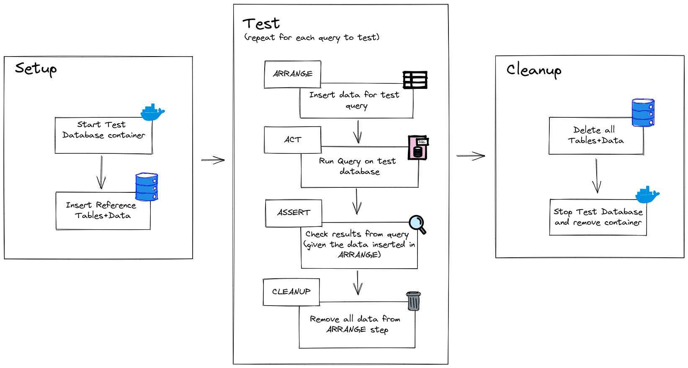

The source code for the demo referenced in this post can be found here. You can jump to the actual testing part here (skip all the intro stuff)

1 SQL in Python
Embedding SQL queries into your python code may not be the ideal approach in every scenario, however sometimes you’re in a situation (by your own making or others’) where you have a complex SQL query sitting in your python application somewhere, and you want to test it just like you test your other functions.
Thinking about how we would test this manually:
- Connect to a dev/test instance of your db
- Copy/paste the sql query into a client (e.g. dbeaver)
- Inspect the rows returned to make sure they are what we expected.
But what do we expect? Sure, there’s an expectation of the shape of the data we get back, i.e. the column names and maybe the number of rows are always the same, but the actual values within them can vary depending on what the current state of the database is - which ultimately can be affected by the time of day, period of the year, user behaviour i.e. the outside world (scary stuff). This isn’t too bad for adhoc manual data checks but this doesn’t work if we want to make testing simple and easy enough to integrate into an automated pipeline.
2 The End Goal
Here’s what we want to achieve (and will!):
- Spin up and connect to a clean db instance
- Insert some mock data necessary for our query to run
- Define the return data expected from running the query, given the mock data we have inserted
- Run our query that we want to test (i.e.
super_critical_sql_queryabove) - Assert that the results from
4.match what we expected in3. - Clean up the database and shut it down after our tests are complete.
The added advantage of 3. is that we can now test edge cases without waiting for an opportunity to arise in the real world. So if there are rare data states in your database, you can test these out by inserting the “rare” data and running your query against it. We’ll see how we can use pytest fixtures to make this setup effortless for multiple tests below!
3 Setting the scene
The full source code (app & tests) can be found here
We’re currently working on a flask api with a single endpoint that returns the net calories for the day:
@app.get("/")
def index():
start_date = request.args.get("start_date")
end_date = request.args.get("end_date")
if start_date and end_date:
calories = get_total_net_calories(
Session(engine),
tuple(
datetime.datetime.fromisoformat(d)
for d in [start_date, end_date]
),
)
else:
calories = get_total_net_calories(Session(engine))
return jsonify({"total_net_calories": calories})get_total_calories connects to a database that stores logs from a food diary and exercise data from my treadmill:
def get_total_net_calories(
session: Session,
date_range: tuple[date, date] = (
date.today(),
date.today() + timedelta(days=1),
),
) -> float | None:
start_date, end_date = date_range
query = """
WITH consumption AS (
SELECT
sum(fr."kcal/unit" * fc.qty) AS total_cons
FROM
public.food_cons fc
JOIN public.food_ref fr ON fc.food_id = fr.id
WHERE
date BETWEEN :start_date :: timestamp
AND :end_date :: timestamp
),
bike_exp AS (
SELECT
--we burn 1kcal/minute
sum(b.duration_min) AS total_bike_exp
FROM
bike b
WHERE
date BETWEEN :start_date :: timestamp
AND :end_date :: timestamp
)
SELECT
(consumption.total_cons - bike_exp.total_bike_exp) AS net_kcal
FROM
bike_exp,
consumption
"""
with session:
result: float | None = session.execute( # type:ignore
query,
{
"start_date": start_date.strftime("%Y-%m-%d"),
"end_date": end_date.strftime("%Y-%m-%d"),
},
).first()[0]
if result:
return round(result, 2)
return4 Testing Motivations
It’s likely that the your application code will need to be changed at some point. For the net calorie API in our example, we can think of a scenario where we add a new exercise to our training regime (we got bored of just using the bike and have ventured out into using the treadmill). To ensure our API endpoint still returns accurate data, the expenditure from this new exercise should be considered in the net calorie calculation. A simple change could be to adjust our query so it looks something like this:
WITH consumption AS (
SELECT
sum(fr."kcal/unit" * fc.qty) AS total_cons
FROM
public.food_cons fc
JOIN public.food_ref fr ON fc.food_id = fr.id
WHERE
date BETWEEN :start_date :: timestamp
AND :end_date :: timestamp
),
bike_exp AS (
SELECT
-- assume 1kcal/minute
sum(b.duration_min) AS total_bike_exp
FROM
bike b
WHERE
date BETWEEN :start_date :: timestamp
AND :end_date :: timestamp
),
treadmill_exp AS (
SELECT
-- assume 0.5kcal/minute
sum(t.duration_min) * 0.5 AS total_treadmill_exp
FROM
treadmill t
WHERE
date BETWEEN :start_date :: timestamp
AND :end_date :: timestamp
)
SELECT
(consumption.total_cons - bike_exp.total_bike_exp -
treadmill_exp.total_bike_exp) AS net_kcal
FROM
bike_exp,
treadmill_exp,
consumptionIf we follow the manual steps above, we could run this query directly on the database and do some manual calculations to make sure the net calories make sense. But there are some issues we could run into:
- We have limited treadmill data (or none) to test our query since this is a new data source.
- We can’t easily test how our query will handle edge cases since they’re rare or don’t exist yet. Some edge cases we would want to test:
- no treadmill data between the start and end dates
- no bike data between the start and end dates
- all true/false combinations of a. and b.
- expenditure is higher than consumption
- Syntax errors/typos could be introduced in the process of copy/pasting between the SQL client and the application.
5 Automated testing
Hopefully there’s enough motivation to look for an automated and repeatable way to test the query, so we can start implementing the end goal mentioned above.
5.1 Instantiate the test database
Before doing any querying or testing, we need to start a database instance - docker makes this quite painless.
We’ll define the image in a Dockerfile and add some seed data that we’ll need for our query. We could’ve chosen to add this data in our tests or fixtures, but since this is reference data and is not specific to a test, we can add it in during the image build.
The seed data script creates the table and adds the reference data:
CREATE TABLE public.food_ref (
id varchar NOT NULL,
"name" varchar NULL,
"kcal/unit" int4 NULL,
unit_of_measure varchar NULL,
CONSTRAINT food_ref_pkey PRIMARY KEY (id)
);
INSERT INTO
public.food_ref (id, "name", "kcal/unit", unit_of_measure)
VALUES
('a', 'bread', 10, 'g')
-- we can add more values here;The postgres docker image will run any .sql (or .sh) scripts in docker-entrypoint-initdb.d/ so we can copy our seed script there:
5.2 Setup fixtures
We can define a session-scope fixture which uses the docker library to build the image and run the container for our tests. Using yield here means that once the tests have run, control is returned back to this fixture and we can remove the container and image so we return to a clean state.
@pytest.fixture(scope="session")
def postgres_container():
"""start docker instance of postgres"""
client = docker.from_env()
client.images.build(
path=TEST_DB_DOCKERFILE_PATH, tag="test_postgres", nocache=True
)
try:
# create container
db_container = client.containers.run(
"test_postgres",
name="test_db",
detach=True,
ports={5432: 5432},
)
except APIError:
# docker api returns an error sincewe already have a container
# remove existing container and make a new one
db_container = client.containers.get("test_db")
db_container.remove() # type:ignore
db_container = client.containers.run(
"test_postgres",
name="test_db",
detach=True,
ports={5432: 5432},
)
# return to calling function so we can use the container
yield
# calling function is done so we can stop and remove the container
db_container.stop() # type:ignore
db_container.remove() # type:ignoreThe only other setup we need is to create a fixture for a session that runs on the test database container above, this will allow us to define some steps to connect, run our tests and then cleanup the database to remove all the data we added for our test:
@pytest.fixture
def test_session(postgres_container) -> Iterator[Session]:
"""create db session and cleanup data after each test"""
# testing connection string
DOCKER_USERNAME = "postgres"
DOCKER_PASSWORD = "password"
DOCKER_HOSTNAME = "localhost:5432"
DOCKER_DB_NAME = "postgres"
sql_url = (
f"postgresql://{DOCKER_USERNAME}:{DOCKER_PASSWORD}@"
f"{DOCKER_HOSTNAME}/{DOCKER_DB_NAME}"
)
engine = create_engine(sql_url, pool_pre_ping=True)
# wait until db is ready
MAX_RETRIES = 100
# max value for backoff time
MAX_RETRY_SLEEP_SEC = 2
num_retries = 0
try:
while num_retries < MAX_RETRIES:
num_retries += 1
# keep increasing back off time until MAX_RETRY_SLEEP_SEC
# using (truncated) exponential backoff
sleep_time_ms = min(
[MAX_RETRY_SLEEP_SEC * 1000, 100 * num_retries]
)
try:
# check if db is ready with simple query
engine.execute("SELECT 1")
except OperationalError:
# db is still starting up, continue loop and retry
sleep(sleep_time_ms / 1000)
continue
# db has started - lets break out of loop
break
except OperationalError:
raise Exception("Couldn't connect to Test Postgres Docker Instance!")
# create all tables registered to our declarative base class
Base.metadata.create_all(engine)
with Session(engine) as session:
yield session
session.commit()
# clean up our db
Base.metadata.drop_all(engine)The logic in ln16 - ln38 ensures that we do not try to create our session before the database in the container is ready. The client.containers.run function in the postgres_container fixture returns before the database is ready since the container has already started successfully.
5.3 The payoff
Finally we can actually test our query:
def test_get_net_calories(test_session: Session):
food_cons = FoodConsumption(
food_id="a", qty="100", date=datetime.date.today()
)
bike_session = Bike(
date=datetime.date.today(), speed_mph=5, duration_min=20
)
with test_session:
test_session.add_all([food_cons, bike_session])
test_session.commit()
result = get_total_net_calories(test_session)
assert result == 980Breaking down what happens when we run our test:
ln1we pass intest_sessionto our test which call thetest_sessionfixture above- The
test_sessionfixture call thepostgres_containerfixture - The db image is built, seeded with reference data and the container is started
- A session is created after connecting to the db container
ln2-ln10we add some data specific to our test (ARRANGE)ln12we run our function under test and pass it thetest_session(ACT)ln14we ensure the data is what we expect (ASSERT)
- Return to the
test_sessionfixture and delete all data in the db (i.e. undo step 5.) - Return to the
postgres_containerfixture and stop the container and remove it. - ???
- PROFIT!!!
Any thoughts, comments or ideas? Please let me know here!